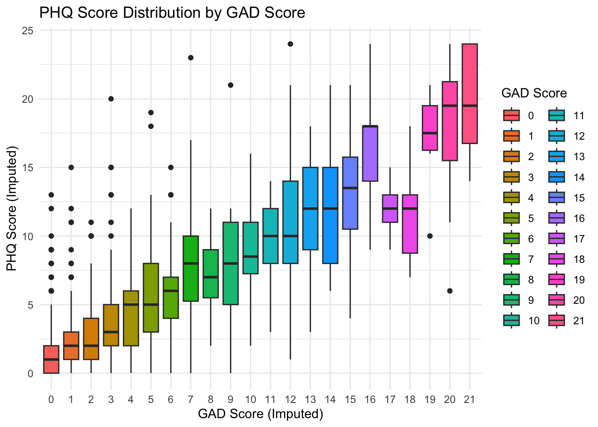

library(dplyr)
library(ggplot2)
library(here)
library(readr)Psychosocial data help researchers understand the complex relationship between psychological, emotional, behavioral, and social aspects of life and their influence on health outcomes. The Acute to Chronic Pain Signatures Study (A2CPS) includes several psychosocial assessments and associated Helping End Addiction Long-term (HEAL) Common Data Elements (Wandner et al., 2022) to gain a comprehensive understanding of chronic pain (Berardi et al., 2022). For a general introduction to psychosocial assessments in clinical research, see resources such as the NIH HEAL Initiative Common Data Elements.
Wandner, L. D., Domenichiello, A. F., Beierlein, J., Pogorzala, L., Aquino, G., Siddons, A., Porter, L., Atkinson, J., & Institute, N. P. C. (2022). NIH’s helping to end addiction long-termSM initiative (NIH HEAL initiative) clinical pain management common data element program. The Journal of Pain, 23(3), 370–378. https://doi.org/10.1016/j.jpain.2021.08.005
These assessments include:
- Pain related psychosocial constructs
- These include pain resilience, catastrophizing, kinesiophobia, and multisensory sensitivity. Pain resilience is measured using the Pain Resilience Scale (PRS)(Slepian et al., 2016). Catastrophizing measures negative appraisal of pain using the Pain Catastrophizing Scale-6 (PCS-6) (McWilliams et al., 2015). Kinesiophobia (fear of movement) is measured using the Fear Avoidance Beliefs Questionnaire—Physical Activity subscale (FABQ-PA)(Waddell et al., 1993). Sensitivity to sensory stimulation (light, sound, odor, flavor, touch) and interoception (balance, nausea, heart rate) are measured using an 8-item General Sensory Sensitivity (GSS) (Schrepf et al., 2018).
- Mood disorders (Depression and Anxiety)
- Depression and Anxiety are measured using the 8-item Patient Health Questionnaire-8 (PHQ-8) (Kroenke et al., 2009) and the 7-item General Anxiety Disorder (GAD-7) instruments (Spitzer et al., 2006)
- Social Support
- PROMIS SFv2.0 Instrumental Support 6a questionnaire is used to measure the quality of social support received by the subjects, and PROMIS SFv2.0 Emotional Support 6a questionnaire measures subjects’ perception about being valued and cared for (Hahn et al., 2010).
- Cognitive Function and Sleep
- Multidimensional Inventory of Subjective Cognitive Impairment (MISCI) (Kratz et al., 2016) measures perceived cognitive dysfunction in patients with fibromyalgia. Sleep is assessed using the PROMIS Short Form v1.0 Sleep Disturbance 6a measure (Yu et al., 2012) and Pain-Sleep Duration (Sleep II) form (Buysse et al., 1989).
- Other Assessments Demographic, Comorbidity Questionnaire (SCQ), The Adverse Childhood Experience questionnaire (ACE), Big Five Inventory−2 short form (BFI-2-S)
- The demographic information form captures age, sex, gender, ethnicity, race, level of education, employment status, relationship status, household income, and disability status. Chronic health conditions are captured using the Self-Administered Comorbidity Questionnaire (SCQ) (Sangha et al., 2003). The Adverse Childhood Experience questionnaire (ACE) (Felitti et al., 1998) is used to assess the history of childhood abuse and dysfunctional family dynamics retrospectively. Also at baseline, five personality constructs are measured using the Big Five Inventory−2 short form (BFI-2-S), which measure five personality domains, i.e., 1. extraversion, 2. agreeableness, 3. conscientiousness, 4. negative emotionality, and 5. open-mindedness (Soto & John, 2017).
Slepian, P. M., Ankawi, B., Himawan, L. K., & France, C. R. (2016). Development and initial validation of the pain resilience scale. The Journal of Pain, 17(4), 462–472. https://doi.org/10.1016/j.jpain.2015.12.010
McWilliams, L., Kowal, J., & Wilson, K. (2015). Development and evaluation of short forms of the pain catastrophizing scale and the pain self-efficacy questionnaire. European Journal of Pain, 19(9), 1342–1349. https://doi.org/10.1002/ejp.665
Waddell, G., Newton, M., Henderson, I., Somerville, D., & Main, C. J. (1993). A fear-avoidance beliefs questionnaire (FABQ) and the role of fear-avoidance beliefs in chronic low back pain and disability. Pain, 52(2), 157–168. https://doi.org/10.1016/0304-3959(93)90127-b
Schrepf, A., Williams, D. A., Gallop, R., Naliboff, B. D., Basu, N., Kaplan, C., Harper, D. E., Landis, J. R., Clemens, J. Q., Strachan, E., et al. (2018). Sensory sensitivity and symptom severity represent unique dimensions of chronic pain: A MAPP research network study. Pain, 159(10), 2002–2011. https://doi.org/10.1097/j.pain.0000000000001299
Kroenke, K., Strine, T. W., Spitzer, R. L., Williams, J. B., Berry, J. T., & Mokdad, A. H. (2009). The PHQ-8 as a measure of current depression in the general population. Journal of Affective Disorders, 114(1-3), 163–173. https://doi.org/10.1016/j.jad.2008.06.026
Spitzer, R. L., Kroenke, K., Williams, J. B. W., & Löwe, B. (2006). A brief measure for assessing generalized anxiety disorder. Archives of Internal Medicine, 166(10), 1092. https://doi.org/10.1001/archinte.166.10.1092
Hahn, E. A., DeVellis, R. F., Bode, R. K., Garcia, S. F., Castel, L. D., Eisen, S. V., Bosworth, H. B., Heinemann, A. W., Rothrock, N., Cella, D., et al. (2010). Measuring social health in the patient-reported outcomes measurement information system (PROMIS): Item bank development and testing. Quality of Life Research, 19(7), 1035–1044. https://doi.org/10.1007/s11136-010-9654-0
Kratz, A. L., Schilling, S., Goesling, J., & Williams, D. A. (2016). The PROMIS FatigueFM profile: A self-report measure of fatigue for use in fibromyalgia. Quality of Life Research, 25(7), 1803–1813. https://doi.org/10.1007/s11136-016-1230-9
Yu, L., Buysse, D. J., Germain, A., Moul, D. E., Stover, A., Dodds, N. E., Johnston, K. L., & Pilkonis, P. A. (2012). Development of short forms from the PROMIS™ sleep disturbance and sleep-related impairment item banks. Behavioral Sleep Medicine, 10(1), 6–24. https://doi.org/10.1080/15402002.2012.636266
Buysse, D. J., Reynolds, C. F., Monk, T. H., Berman, S. R., & Kupfer, D. J. (1989). The pittsburgh sleep quality index: A new instrument for psychiatric practice and research. Psychiatry Research, 28(2), 193–213. https://doi.org/10.1016/0165-1781(89)90047-4
Sangha, O., Stucki, G., Liang, M. H., Fossel, A. H., & Katz, J. N. (2003). The self-administered comorbidity questionnaire: A new method to assess comorbidity for clinical and health services research. Arthritis Care & Research: Official Journal of the American College of Rheumatology, 49(2), 156–163. https://doi.org/10.1002/art.10993
Felitti, V. J., Anda, R. F., Nordenberg, D., Williamson, D. F., Spitz, A. M., Edwards, V., & Marks, J. S. (1998). Relationship of childhood abuse and household dysfunction to many of the leading causes of death in adults: The adverse childhood experiences (ACE) study. American Journal of Preventive Medicine, 14(4), 245–258. https://doi.org/10.1016/S0749-3797(98)00017-8
Soto, C. J., & John, O. P. (2017). Short and extra-short forms of the big five inventory2: The BFI-2-s and BFI-2-XS. Journal of Research in Personality, 68, 69–81. https://doi.org/10.1016/j.jrp.2017.02.004
1.1 Starting Project
1.1.1 Locate Data
We assume that the data were downloaded from the NIMH Data Archive (NDA) as a Data Package and saved to data/nda inside the project folder (Appendix C describes what a package contains). Each NDA data structure is a table, <structure>.txt, and any files that the structure references are underneath a folder of the same name, <structure>/. Paths in the text start from the folder that holds the structure’s files (for the MRI data, <structure>/corral-secure/projects/A2CPS/products/consortium-data/pre-surgery), while code chunks spell out the full path from the project folder.
On the NDA, the GAD-7 and PHQ-9 are the cde_gad701 and cde_phq901 structures. This kit instead starts from the reformatted tables that A2CPS distributes in its internal releases on TACC, which are not part of the NDA package:
/corral-secure/projects/A2CPS/products/consortium-data/pre-surgery-release-2-1-0/psychosocial/reformattedThe code below reads a local copy of that folder, data/pre-surgery/psychosocial/reformatted.
1.1.2 Extract Data
Often, researchers want to examine the relationship between different psychosocial measures. For example, Anxiety (GAD-7) and Depression (PHQ-9) frequently coexist due to shared biological mechanisms.
To explore this, we first load the relevant datasets.
gad <- read_csv(here(
"data",
"pre-surgery",
"psychosocial",
"reformatted",
"reformatted_gad.csv"
))
phq <- read_csv(here(
"data",
"pre-surgery",
"psychosocial",
"reformatted",
"reformatted_phq.csv"
))Next, we join the datasets using the unique identifiers record_id and guid. These identifiers allow you to link records across different psychosocial forms, as well as to other modalities (like neuroimaging or genomics). The inner_join function is used here to keep only rows that exist in both tables.
gad_phq <- inner_join(gad, phq, by = intersect(names(gad), names(phq)))View columns available after merging the two datasets
head(gad_phq)| record_id | guid | redcap_event_name | redcap_data_access_group | cohort | gad2feelnervscl | gad2notstopwryscl | gad7wrytoomchscl | gad7troubrelxscl | gad7rstlessscl | gad7easyannoyedscl | gad7feelafrdscl | gad7totscore | gad7difficulttowork | generalized_anxiety_disorder_7_item_gad7_scale_sco_complete | gad_diff | imputed_gad_score | phqlitintrstscore | phqdeprssnscore | phqsleepimpairscore | phqtirdlittleenrgyscore | phqabnrmldietscore | phqflngfailrscore | phqconcntrtnimprmntscore | phqmovmntspchimprmntscore | phqtotalscore | patient_health_questionnaire_depression_scale_phq_complete | phq_diff | imputed_phq_score |
|---|---|---|---|---|---|---|---|---|---|---|---|---|---|---|---|---|---|---|---|---|---|---|---|---|---|---|---|---|
| 10001 | 90F8FC45-5D53-0DE4-6853-284607A8C4E6 | baseline_visit_arm_1 | rush_university_me | TKA | 1 | 1 | 1 | 2 | 1 | 2 | 0 | 8 | 1 | 2 | 1 | 8 | 1 | 1 | 2 | 2 | 0 | 2 | 2 | 0 | 10 | 2 | 1 | 10 |
| 10003 | 3D64236C-04A5-6B6B-D67B-B8DCE42DCE24 | baseline_visit_arm_1 | rush_university_me | TKA | 2 | 1 | 1 | 1 | 0 | 0 | 1 | 6 | 1 | 2 | 1 | 6 | 1 | 1 | 1 | 1 | 0 | 1 | 1 | 0 | 6 | 2 | 1 | 6 |
| 10004 | 3D18263F-58E6-0421-355F-0B40D4B49772 | baseline_visit_arm_1 | rush_university_me | TKA | 0 | 0 | 0 | 0 | 0 | 0 | 0 | 0 | 0 | 2 | 1 | 0 | 0 | 0 | 0 | 0 | 0 | 0 | 0 | 0 | 0 | 2 | 1 | 0 |
| 10005 | FB37DE84-DCC7-5F80-0044-EFA96200E30D | baseline_visit_arm_1 | rush_university_me | TKA | 1 | 0 | 0 | 1 | 0 | 0 | 0 | 2 | 1 | 2 | 1 | 2 | 0 | 1 | 1 | 0 | 0 | 0 | 0 | 0 | 2 | 2 | 1 | 2 |
| 10006 | BE03636F-BBB4-424E-875D-1D230C76EC63 | baseline_visit_arm_1 | rush_university_me | TKA | 0 | 0 | 0 | 0 | 0 | 0 | 0 | 0 | 0 | 2 | 1 | 0 | 0 | 0 | 1 | 0 | 0 | 0 | 1 | 0 | 2 | 2 | 1 | 2 |
| 10007 | DBFF8148-0AA2-EBC1-26E3-4F3E2B0E59C9 | baseline_visit_arm_1 | rush_university_me | TKA | 1 | 1 | 1 | 0 | 0 | 1 | 1 | 5 | 0 | 2 | 1 | 5 | 0 | 0 | 1 | 0 | 1 | 0 | 0 | 0 | 2 | 2 | 1 | 2 |
Check data types and ensure that character variables are not stored as numeric, and that numeric variables are stored with the correct numeric type—not as character or factor.
glimpse(gad_phq)Rows: 1,362
Columns: 29
$ record_id <dbl> 10001, 100…
$ guid <chr> "90F8FC45-…
$ redcap_event_name <chr> "baseline_…
$ redcap_data_access_group <chr> "rush_univ…
$ cohort <chr> "TKA", "TK…
$ gad2feelnervscl <dbl> 1, 2, 0, 1…
$ gad2notstopwryscl <dbl> 1, 1, 0, 0…
$ gad7wrytoomchscl <dbl> 1, 1, 0, 0…
$ gad7troubrelxscl <dbl> 2, 1, 0, 1…
$ gad7rstlessscl <dbl> 1, 0, 0, 0…
$ gad7easyannoyedscl <dbl> 2, 0, 0, 0…
$ gad7feelafrdscl <dbl> 0, 1, 0, 0…
$ gad7totscore <dbl> 8, 6, 0, 2…
$ gad7difficulttowork <dbl> 1, 1, 0, 1…
$ generalized_anxiety_disorder_7_item_gad7_scale_sco_complete <dbl> 2, 2, 2, 2…
$ gad_diff <dbl> 1, 1, 1, 1…
$ imputed_gad_score <dbl> 8, 6, 0, 2…
$ phqlitintrstscore <dbl> 1, 1, 0, 0…
$ phqdeprssnscore <dbl> 1, 1, 0, 1…
$ phqsleepimpairscore <dbl> 2, 1, 0, 1…
$ phqtirdlittleenrgyscore <dbl> 2, 1, 0, 0…
$ phqabnrmldietscore <dbl> 0, 0, 0, 0…
$ phqflngfailrscore <dbl> 2, 1, 0, 0…
$ phqconcntrtnimprmntscore <dbl> 2, 1, 0, 0…
$ phqmovmntspchimprmntscore <dbl> 0, 0, 0, 0…
$ phqtotalscore <dbl> 10, 6, 0, …
$ patient_health_questionnaire_depression_scale_phq_complete <dbl> 2, 2, 2, 2…
$ phq_diff <dbl> 1, 1, 1, 1…
$ imputed_phq_score <dbl> 10, 6, 0, …1.2 Exploratory data analysis
Anxiety and depression frequently coexist due to shared biological mechanisms and overlapping symptoms. Approximately 50% of patients with depression also meet the criteria for having an anxiety disorder. The co-occurrence of anxiety and depression in an individual increases the risk of suicide, affects social interactions, and results in more hospitalizations (Kircanski et al., 2017). We are interested in looking at the association between Anxiety scores and Depression scores. While looking at the datatypes, spearman correlation would be the measure of choice since we have confirmed using the glimpse() function that those variables are stored as ordered and numeric.
Kircanski, K., LeMoult, J., Ordaz, S., & Gotlib, I. H. (2017). Investigating the nature of co-occurring depression and anxiety: Comparing diagnostic and dimensional research approaches. Journal of Affective Disorders, 216, 123–135. https://doi.org/10.1016/j.jad.2016.08.006
Spearman Correlation:
Since GAD and PHQ scores are ordered but not continuous, spearman correlation here would be a better choice than pearson since it measures monotonic association between two variables by comparing their ranks, we will add the argument use = "complete.obs" to ignore rows with missing values.
cor(gad_phq$imputed_gad_score, gad_phq$imputed_phq_score, use = "complete.obs")[1] 0.7626977As expected we see a very strong correlation between anxiety and depression within the A2CPS cohort i.e. 0.76. Let’s visualize these results with a simple boxplot.
# Remove rows with NA in either column
gad_phq_clean <- gad_phq |>
filter(!is.na(imputed_gad_score), !is.na(imputed_phq_score))
# Create the plot
ggplot(
gad_phq_clean,
aes(
x = factor(imputed_gad_score),
y = imputed_phq_score,
fill = factor(imputed_gad_score)
)
) +
geom_boxplot() +
labs(
title = "PHQ Score Distribution by GAD Score",
x = "GAD Score (Imputed)",
y = "PHQ Score (Imputed)",
fill = "GAD Score"
) +
theme_minimal()
We see that there is a positive association between Anxiety and Depression scores.
1.3 Considerations While Working on the Project
1.3.1 Data Generation
Self-reported assessments are collected electronically through a variety of surveys using Research Electronic Data Capture (REDCap™) and/or MyDataHelps™ (RKStudio™, CareEvolution, LLC, Ann Arbor, MI). A2CPS includes the core psychosocial assessments and associated HEAL CDEs for harmonization. Remote assessments have been implemented for both English and Spanish-speaking participants. Of note: two psychosocial items were also collected during brain-imaging sessions, a pain assessment and a mood assessment.
1.3.2 Data Quality
The data were exported from REDCap and may contain errors or missing values. Therefore, to ensure high-quality data, the data were cleaned and reformatted. For details, see Appendix E. There are individual reformatted files as well as a combined file for psychosocial data (look for files ending in TKA and/or Thoracic).
1.3.3 Cross-Modality Links
All files include record_id and guid, which serve as unique identifiers and enable linkage across psychosocial data files as well as other data modalities.
1.3.4 Missing Data
Proceed with caution when merging data across psychosocial data or different modalities. Merging datasets often leads to a reduced sample size due to missing data or incomplete forms. This can lower statistical power and limit the ability to draw reliable conclusions.
1.3.5 Citations
In publications or presentations including data from A2CPS, please include the following statement as attribution:
Data were provided (in part) by the A2CPS Consortium funded by the National Institutes of Health (NIH) Common Fund, which is managed by the Office of the Director (OD)/Office of Strategic Coordination (OSC). Consortium components and their associated funding sources include Clinical Coordinating Center (U24NS112873), Data Integration and Resource Center (U54DA049110), Omics Data Generation Centers (U54DA049116, U54DA049115, U54DA049113), Multi-site Clinical Center 1 (MCC1) (UM1NS112874), and Multi-site Clinical Center 2 (MCC2) (UM1NS118922).
Note
Berardi, G., Frey-Law, L., Sluka, K. A., Bayman, E. O., Coffey, C. S., Ecklund, D., Vance, C. G. T., Dailey, D. L., Burns, J., Buvanendran, A., McCarthy, R. J., Jacobs, J., Zhou, X. J., Wixson, R., Balach, T., Brummett, C. M., Clauw, D., Colquhoun, D., Harte, S. E., … Wandner, L. D. (2022). Multi-site observational study to assess biomarkers for susceptibility or resilience to chronic pain: The acute to chronic pain signatures (A2CPS) study protocol. Frontiers in Medicine, 9. https://doi.org/10.3389/fmed.2022.849214
Sluka, K. A., Wager, T. D., Sutherland, S. P., Labosky, P. A., Balach, T., Bayman, E. O., Berardi, G., Brummett, C. M., Burns, J., Buvanendran, A., et al. (2023). Predicting chronic postsurgical pain: Current evidence and a novel program to develop predictive biomarker signatures. Pain, 164(9), 1912–1926. https://doi.org/10.1097/j.pain.0000000000002938